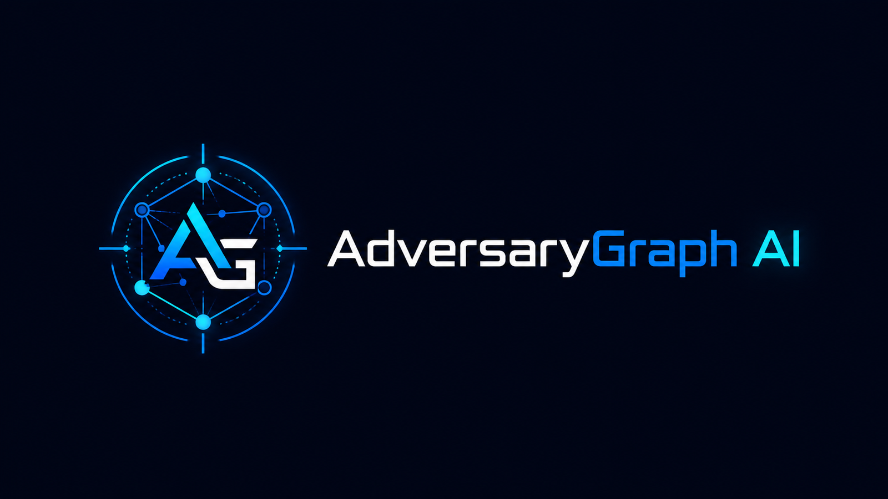

Reports are inconsistent and verbose
Vendor CTI reports, incident writeups, and OSINT sources vary widely in structure, depth, and terminology. Extracting ATT&CK technique references manually is slow and error-prone at scale.

Self-Hosted · AI-Assisted · MITRE ATT&CK · IOC Enrichment · Malware Analysis · CTI Platform
AI-assisted CTI platform for mapping threat reports, logs, PCAP-derived telemetry, IOC context, and malware-analysis findings to MITRE ATT&CK; investigating IOC relationships; comparing TTP overlap with known groups and campaigns; and generating analyst-ready intelligence outputs. Browser-native public workspace plus a self-hosted Docker control plane with operator-configured LLM providers.
CTI and malware research both have a structural bottleneck between raw evidence and structured, actionable output.
Vendor CTI reports, incident writeups, and OSINT sources vary widely in structure, depth, and terminology. Extracting ATT&CK technique references manually is slow and error-prone at scale.
Mapping behaviors in a report to ATT&CK technique IDs requires reading, judgment, and cross-referencing — repeated for every source, every engagement, every campaign update.
Checking whether extracted TTPs resemble a known APT group's profile means manually looking up groups, comparing technique lists, and tracking overlaps and gaps — without tooling, this is ad hoc at best.
Turning CTI into a detection backlog requires structured technique IDs, tactic context, and evidence. Unstructured report text doesn't translate directly into Sigma rules, SIEM queries, or detection priorities.
ATT&CK Navigator and similar tools are excellent for visualization, but they require the analyst to build layers manually. The extraction, comparison, and export workflow still requires custom effort.
Customer reports, red team debriefs, and internal incidents can't be uploaded to cloud-hosted SaaS analysis platforms. Analysts need self-hosted options with full data control.
Hashes, strings, packer hints, APIs, imported functions, runtime leads, and ATT&CK techniques often stay in separate reverse-engineering notes. AdversaryGraph links those findings back into IOC, TTP, investigation, and detection workflows.
AdversaryGraph automates the mechanical steps of the CTI-to-detection workflow while keeping analyst judgment at every decision gate.
Upload a PDF, DOCX, or paste raw text. Select your LLM provider. AdversaryGraph extracts ATT&CK technique IDs with supporting evidence and confidence scores, streamed token by token.
Extracted techniques are compared against all known ATT&CK groups and campaigns using Jaccard similarity. Results surface groups with the highest TTP overlap — useful as an analytical signal for hypothesis generation and investigation prioritization.
Extracted techniques are visualized as an interactive ATT&CK Navigator-style heatmap. Layer overlays, campaign comparisons, and named layer libraries allow side-by-side analytical views.
Export structured technique lists, confidence scores, and evidence references. One-click PDF reports suitable for analyst handoffs, briefings, or detection backlog tickets.
Run controlled Windows-sample triage through the MalwareGraph-backed module: hashes, PE metadata, entropy, strings, IOC/TTP extraction, unpacking, decompilation views, debug workspaces, and AI summaries. Dynamic analysis is gated to isolated lab profiles.
End-to-end flow from raw threat report to analyst-ready output.
All steps include analyst review points. AdversaryGraph accelerates mechanical work — it does not replace analyst judgment on evidence quality, confidence calibration, or attribution decisions.
A public browser-native ATT&CK workspace for exploring techniques, building layers, comparing group profiles, loading sample workflows, reviewing detection gaps, and exporting analyst-ready outputs. It does not perform LLM report extraction or backend private-report storage.
The full self-hosted platform for provider-configured AI-assisted report extraction, private PostgreSQL-backed analyses, campaign comparison, MalwareGraph-backed malware analysis, API access, PDF reports, and ATT&CK synchronization.
AdversaryGraph is a self-hosted stack deployable via Docker Compose.
React single-page application. Interactive ATT&CK Navigator matrix, streaming extraction panel, comparison views, and report generation. Runs in the browser after container startup.
FastAPI (Python). Handles report ingestion, LLM provider routing, ATT&CK data lookups, similarity computation, and structured output generation. REST endpoints, documented and testable.
PostgreSQL database for storing analysis results, technique extractions, report metadata, and layer configurations. Enables stored report comparison across multiple analyses.
Bundled MITRE ATT&CK STIX data for Enterprise, Mobile, and ICS domains. Group and campaign profiles used for TTP overlap computation without requiring external API calls during analysis.
Configurable multi-provider LLM routing. Claude (Anthropic), OpenAI GPT-4o, and Google Gemini supported. Provider selection at analysis time — no vendor lock-in, switchable per use case.
Structured JSON output for downstream tooling integration. ATT&CK Navigator-compatible layer files. PDF report generation for analyst briefings and detection backlog handoffs.
Separate malware-analysis service for controlled sample intake, static triage, strings, unpacking, decompilation metadata, debug workspace state, AI summaries, and gated dynamic workflow planning. Malware samples remain outside the main app containers.
AdversaryGraph is one component in a broader CTI and detection engineering portfolio. Related projects it connects to:
Practitioner tradecraft for CTI analysts: evidence discipline, attribution methodology, Admiralty scale, hunting hypothesis construction, and detection backlog management. 80 pages, 10 modules.
Complete CTI-to-detection pipeline on a real adversary — the kind of structured workflow AdversaryGraph is designed to accelerate. From raw reports to 16 validated detection rules.
OpenCTI platform with AI enrichment connector — structured STIX 2.1 intelligence management, source confidence scoring, and analyst-gated knowledge graph workflows.
End-to-end methodology for structured CTI engagements with human validation gates. AdversaryGraph fits into the extraction and mapping phases of this 15-phase cycle.
Vendor-neutral reference connecting ATT&CK-aligned techniques to statistical anomalies and log sources. Useful downstream from AdversaryGraph output for detection design.
Detection engineering reference for insider threat scenarios — 14 documented cases, 4-tier detection taxonomy, UEBA, and deception. ATT&CK-aligned throughout.
How AI changes the attacker skill floor and what SOC teams must change in detection, CTI, and response. Context for why AI-assisted CTI tooling matters for defenders.
Browser-native ATT&CK explorer with dynamic current-release data, group-profile comparison, TTP gap analysis, local workspaces, sample workflows, and exports. No LLM extraction or backend report storage.
Sector CTI covering Iranian, Palestinian, and regional threat actors targeting Israeli public sector and critical infrastructure — the type of structured CTI AdversaryGraph helps produce.